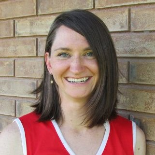

<div class="home">

  <div class="col-wrapper">
    <div class="col-image">  </div>
    <div class="col-body">  

     <p style="margin-top=5em;">Hi, I'm Rachel.</p>

     <p>I love finding patterns in large datasets and enjoy helping others do the same.</p> 

     <p>I am currently the Director of Data Science for <a href="http://www.fnf.com">Fidelity National Financial</a>, where I am helping to build a culture of data-driven insight and innovation through the development of a corporate research practice, peer-review, and supportive atmosphere for learning.</p>

<!--

     <p>An abbreviated timeline...</p>

     <div>
      <table>
        <tbody>
          <tr class="resume-row">
          <td class="resume-date">2001</td>
          <td class="resume-body">I got my start as an operations processor in the <a href="https://www.wellsfargofunds.com/ind/account-services/account-inactivity.html">unclaimed property</a> department at <a href="https://www.wellsfargo.com/">Wells Fargo Bank</a>, where I learned business process, database, and in-house software design from the ground up.</td>
          </tr>
          <tr class="resume-row">
          <td class="resume-date">2005</td>
          <td class="resume-body">From there, I took my skills as a business analyst to the next level at <a href="http://www.fnf.com/">Fidelity National Financial</a>, where I focused primarily on large software integrations spanning operations, accounting, and reporting systems.</td>
          </tr>
          <tr class="resume-row">
          <td class="resume-date">2012</td>
          <td class="resume-body">I left the corporate world to pursue a PhD in mathematics, which I earned in May 2017 from <a href="http://www.math.rutgers.edu/">Rutgers University</a>. My work focused on topological methods for high-dimensional data analysis with a specialization in <a href="https://en.wikipedia.org/wiki/Persistent_homology">persistent homology</a>.</td>
          </tr>
          <tr class="resume-row">
          <td class="resume-date">2017</td>
          <td class="resume-body">Following my graduate studies, I worked as a postdoctoral researcher at the <a href="http://www.upenn.edu/">University of Pennsylvania</a>, where my research was funded by <a href="https://www.darpa.mil/program/models-dynamics-and-learning">DARPA's MoDyL program</a>.</td>
          </tr>
          <tr class="resume-row">
          <td class="resume-date">2018</td>
          <td class="resume-body">Rejoined the <a href="http://www.fnf.com">Fidelity National Financial</a> family as their Director of Data Science.</td>
          </tr>
        </tbody>
      </table>

     </div>

     -->

     <p>As always: looking forward to the next big adventure!</p>

    </div>
  </div>

</div>

